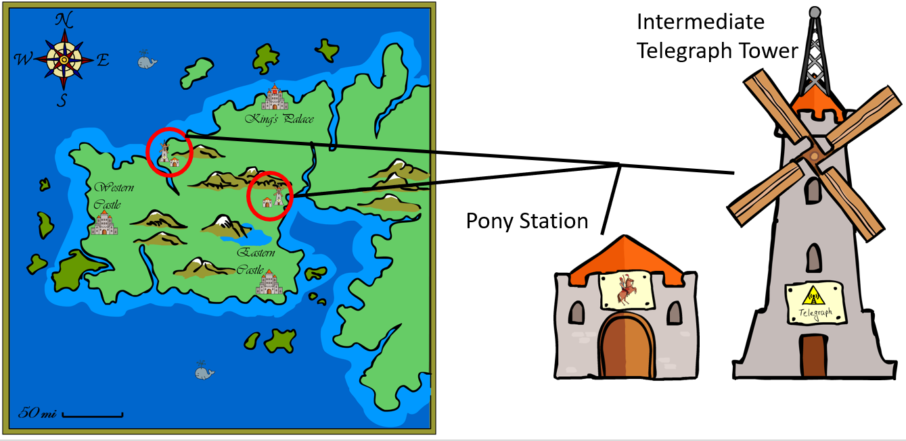

Basic information about Tristonia's emergency-call system:
The emergency call system of Tristonia is based on three factors: Carrier Pigeons, Telegraphs, and Pony Riders. Both the Western and the Eastern Castle have a dovecote in one of their towers in which they keep carrier pigeons that can be used to send an emergency call to the Palace. The pigeons cannot fly the whole way to the King’s Palace, however. Both castles therefore send their pigeons to intermediate telegraph towers positioned half way to the palace (see illustration below). These intermediate telegraph towers have the task to pass emergency signals delivered by carrier pigeons from the castles on to the King's Palace.
Of course, it might happen from time to time that a carrier pigeon sent by a castle gets lost on its way to the intermediate station. Also, since telegraphy is a new technology based on electricity generated with wind energy, an intermediate telegraph tower may not always work correctly. When a tower has problems with its electricity supply, it cannot send out an emergency telegram to the place.
To handle situations in which received emergency calls cannot be passed on to the palace via telegraphy, there have been pony stations installed next to each intermediate telegraph tower. Whenever a telegraph tower is out of electricity and cannot pass on a received signal, a rider is sent out instead to trigger the emergency alarm in the palace. These situations are not optimal, however, because it is a long way to the palace and riders sometimes get attacked and murdered by bandits living in the mountains.

Please click “Continue” to learn more.